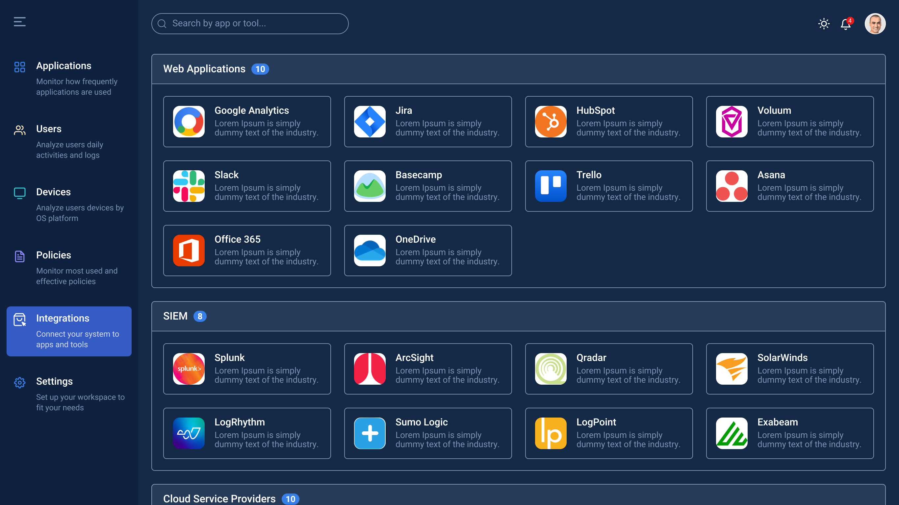
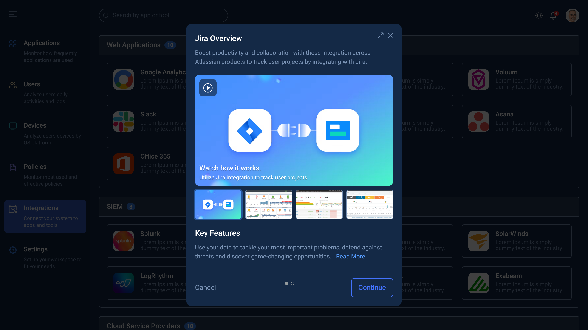
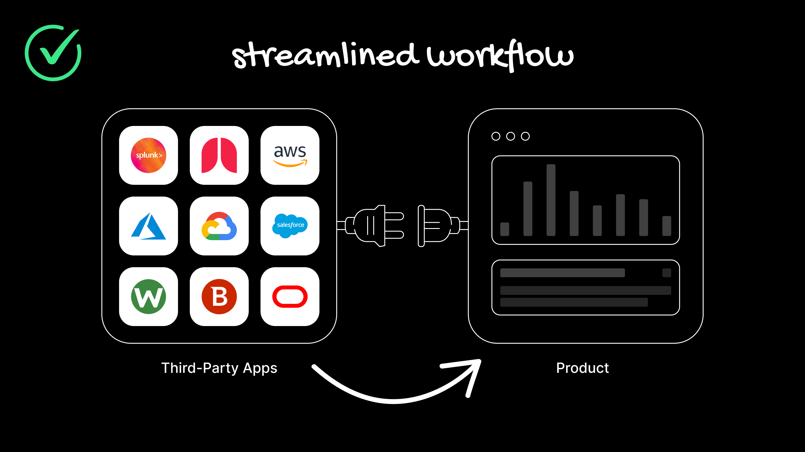
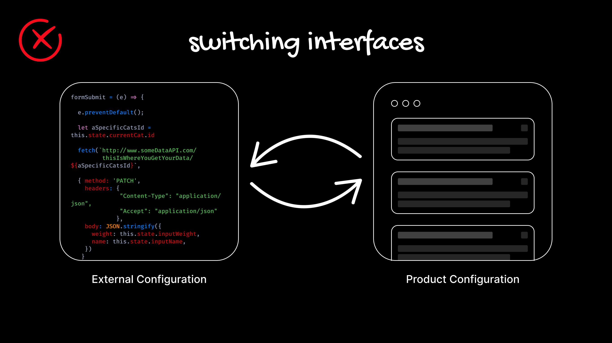
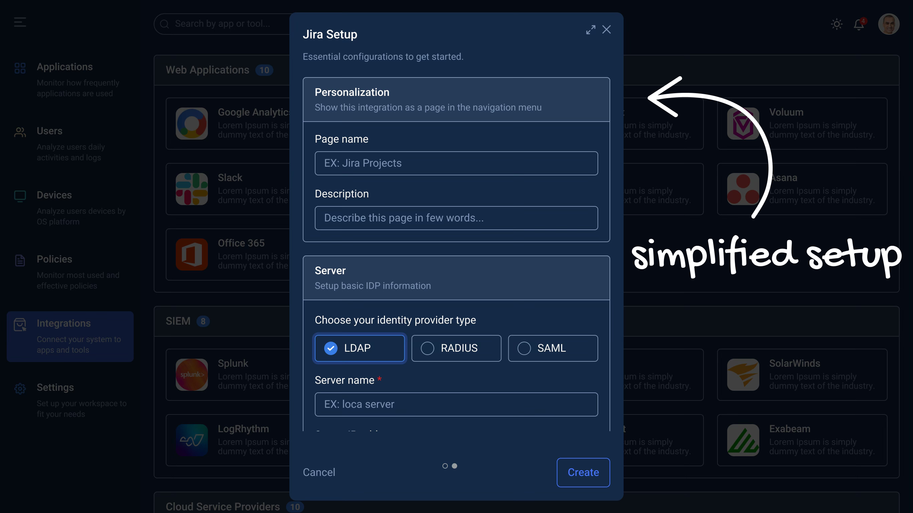
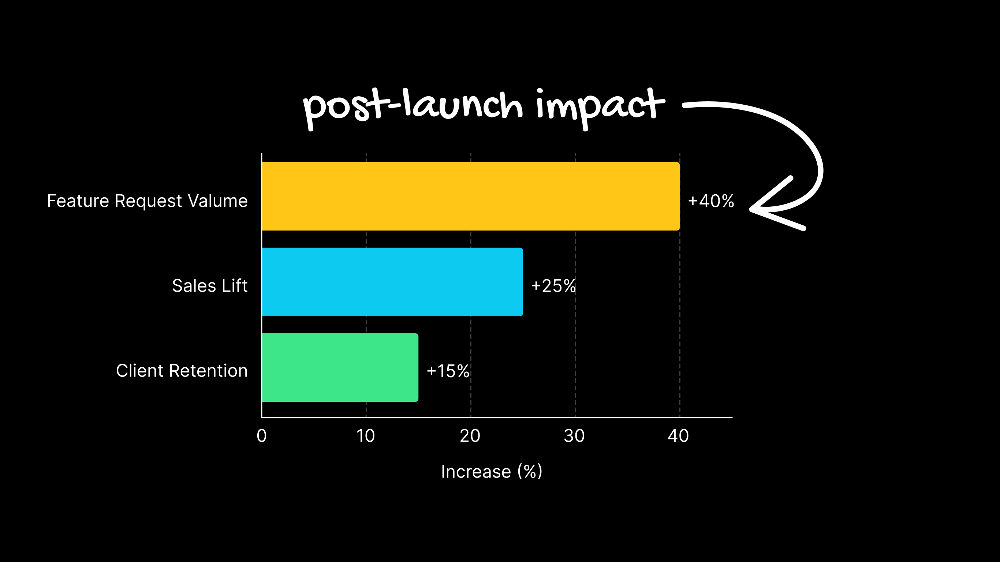
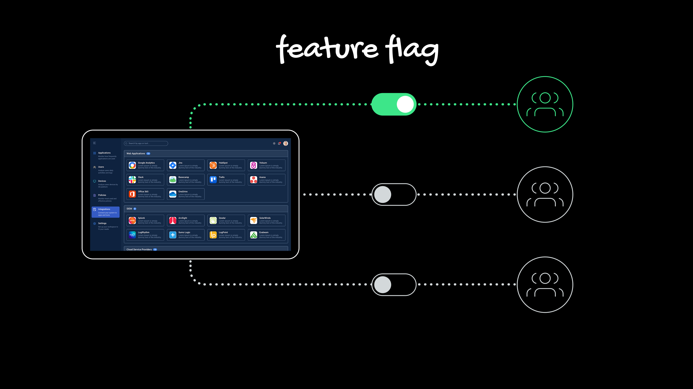

Apps and tools integration that simplify workflows and boost productivity.

Discover, connect, and manage third-party tools and apps.

Set up and connect using a simplified configuration flow.
This centralized marketplace allows users to discover, connect, and manage third-party software, which enhances the core product's functionality and automates workflows.


This case study details the successful design and launch of a native Integration Marketplace.
Third-party data management became overly complex and inefficient due to the use of various external apps and tools on different platforms, leading to a poor user experience.
Native integration with apps and tools was selected based on three key considerations: management, security, and user experience, with a focus on simplifying workflows and boosting productivity.
Successful improvement in client retention and a significant boost in sales, leading to developing customized feature requests based on clients needs.
Based on customer feedback highlighting recurring pain points and clear business needs, I designed and validated a new simplified apps and tools integration experience.
The Integration Marketplace project addressed user frustration from complex, disparate system management. Our objective was to investigate the pain points of a fragmented system. The goal was to inform the design of a centralized, native integration experience that accelerates application setup and streamlines workflows.

Research confirmed the system's reliance on various external apps caused significant cognitive load and unnecessary friction. Data showed users wasted time switching interfaces and troubleshooting connectivity. This complexity led to a poor user experience and hindered productivity.

The native integration solution was based on three foundational design pillars: simplified management, robust security, and a superior user experience. The design had to centralize connections, provide clear security controls, and simplify workflows. A simplified setup model was key to boosting productivity.

Post-launch analysis showed immediate success. The simpler setup led to a measurable improvement in client retention. The enhanced user experience also contributed to a significant boost in sales. Future research will now focus on evolving the Marketplace functionality based on the new flow of customized feature requests.

The following data demonstrates improvements across key UX metrics and user behavior:
The core research successfully streamlined data management and integrations, leading to significant client retention and confirming the strategic value of the native Integration Marketplace.
A feature flag was implemented, allowing administrators to toggle the visibility of the Integration Marketplace link in the side menu. This controlled rollout ensured administrators could manage organizational adoption and documentation before releasing the feature to all teams.
